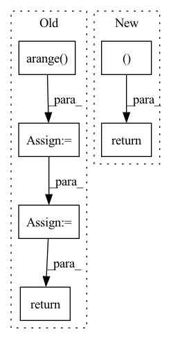

Pattern ID :788
Before Change
// Self-attention
// TODO: 其他模型结构
len_range = torch.from_numpy(np.arange( self.max_his) ).to(history.device)
position = (lengths[:, None] - len_range[None, :seq_len]) * valid_his
pos_vectors = self.p_embeddings(position)
his_vectors = his_vectors + pos_vectors
attn_mask = valid_his.view(batch_size, 1, 1, seq_len)
his_vectors = self.transformer(his_vectors, attn_mask)
his_vectors = his_vectors * valid_his[:, :, None].float()
his_vector = his_vectors.sum(1) / lengths[:, None].float()
// his_vector = his_vectors[torch.arange(batch_size), lengths - 1, :]
intent_pred = self.proj(his_vector) // bsz, K
return intent_pred
After Change
his_vectors = self.i_embeddings(history)
his_vector = self.encoder(his_vectors, lengths, valid_his, t_history, user_min_t)
intent_pred = self.proj(his_vector) // bsz, K
return his_vector, intent_pred
class GRUEncoder(nn.Module):
def __init__(self, emb_size):In pattern: SUPERPATTERN
Frequency: 3
Non-data size: 6
Instances Fragment ID: 2533542
Project Name: thuwangcy/rechorus
Commit Name: 7c6b4cfaf0b7765452a8e750212a05ddf29aaae7
Time: 2021-08-16
Author: THUwangcy@gmail.com
File Name: src/models/developing/TiMiRec.py
M Class Name: IntentPredictor
N Class Name: IntentPredictor
M Method Name: forward(5)
N Method Name: forward(3)
M Parent Class: nn.Module
N Parent Class: nn.Module
M File Name: src/models/developing/TiMiRec.py
N File Name: src/models/developing/TiMiRec.py
M Start Line: 207
M End Line: 224
N Start Line: 217
N End Line: 222
Before Change
if self.use_mask:
lens = lens.to(dtype=torch.long)
max_len = x.size(2)
mask = torch.arange( max_len) .to(lens.device).expand(
len(lens), max_len
) >= lens.unsqueeze(1)
x = x.masked_fill(mask.unsqueeze(1).to(device=x.device), 0)
// del mask
lens = self.get_seq_len(lens)
sh = x.shape
if self.heads != -1:
x = x.view(-1, self.heads, sh[-1])
out = self.conv(x)
if self.heads != -1:
out = out.view(sh[0], self.real_out_channels, -1)
return out, lens
class GroupShuffle(nn.Module):After Change
if self.use_mask:
x = self.mask_fill(x, lens)
out = self.conv(x)
return out, self.get_seq_len(lens)
def GroupShuffle(groups: int, channels: int) -> nn.Module:
Group shuffle operator from shufflenet. Fragment ID: 2533550
Project Name: scart97/thunder-speech
Commit Name: 1eb7dfb6a8a7b1e3d30aaebb26a0f0ca0390e542
Time: 2021-01-30
Author: scart.lucas@gmail.com
File Name: src/thunder/jasper/blocks.py
M Class Name: MaskedConv1d
N Class Name: MaskedConv1d
M Method Name: forward(3)
N Method Name: forward(3)
M Parent Class: nn.Module
N Parent Class: nn.Module
M File Name: src/thunder/jasper/blocks.py
N File Name: src/thunder/jasper/blocks.py
M Start Line: 165
M End Line: 185
N Start Line: 225
N End Line: 239
Before Change
d_2 = d // 2
// Create position indexes `[0, 1, ..., seq_len - 1]`
seq_idx = torch.arange( seq_len, device=x.device) .type_as(self.theta)
// Calculate the product of position index and $\theta_i$
idx_theta = torch.einsum("n,d->nd", seq_idx, self.theta)
// Concatenate so that for row $m$ we have
// $[m \theta_0, m \theta_1, ..., m \theta_{\frac{d}{2}}, m \theta_0, m \theta_1, ..., m \theta_{\frac{d}{2}}]$
idx_theta2 = torch.cat([idx_theta, idx_theta], dim=1)
// Calculate $[-x^{(\frac{d}{2} + 1)}, -x^{(\frac{d}{2} + 2)}, ..., -x^{(d)}, x^{(1)}, x^{(2)}, ..., -x^{(\frac{d}{2})}]$
neg_half_x = torch.cat([-x[:, :, :, d_2:], x[:, :, :, :d_2]], dim=-1)
// Calculate
//
// \begin{align}
// \begin{pmatrix}
// x^{(i)}_m \cos m \theta_i - x^{(i + \frac{d}{2})}_m \sin m \theta_i \\
// x^{(i + \frac{d}{2})}_m \cos m\theta_i + x^{(i)}_m \sin m \theta_i \\
// \end{pmatrix} \\
// \end{align}
//
// for $i \in {1, 2, ..., \frac{d}{2}}$
rx = (x * idx_theta2.cos()[:, None, None, :]) + (neg_half_x * idx_theta2.sin()[:, None, None, :])
//
return rx
class RotaryPEMultiHeadAttention(MultiHeadAttention):After Change
x_rope = (x_rope * self.cos_cached[:x.shape[0]]) + (neg_half_x * self.sin_cached[:x.shape[0]])
//
return torch.cat((x_rope, x_pass ), dim=-1)
class RotaryPEMultiHeadAttention(MultiHeadAttention): Fragment ID: 2533528
Project Name: lab-ml/nn
Commit Name: 0ce65adf9e602321109528b05cf99fccb16cd2de
Time: 2022-06-03
Author: vpjayasiri@gmail.com
File Name: labml_nn/transformers/rope/__init__.py
M Class Name: RotaryPositionalEmbeddings
N Class Name: RotaryPositionalEmbeddings
M Method Name: forward(2)
N Method Name: forward(2)
M Parent Class: nn.Module
N Parent Class: nn.Module
M File Name: labml_nn/transformers/rope/__init__.py
N File Name: labml_nn/transformers/rope/__init__.py
M Start Line: 132
M End Line: 163
N Start Line: 171
N End Line: 193